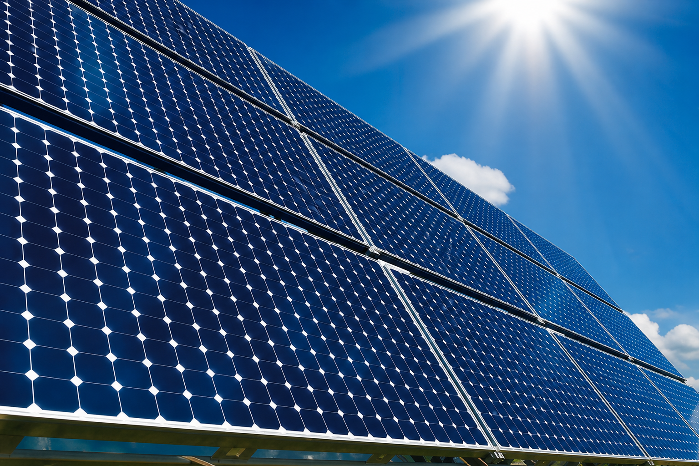
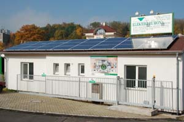

Fotovoltaika (FVE)
Kompletní dodávky fotovoltaických elektráren na klíč včetně stavebního řízení, připojení k distribuční soustavě a licence na výrobu.
Dodáváme celky i jednotlivé komponenty — moduly, měniče, kabeláž a monitoring. Technickou podporu poskytujeme po celou dobu provozu. Máme zkušenosti od střešních mikrozdrojů po větší instalace na výrobních objektech a desítky projektů podpořených z fondů EU.
Pro koho
- mikrozdroje do 10 kW pro rodinné domy
- fotovoltaika na střechách administrativních a výrobních objektů
- poradenství k připojení a dotačním možnostem v regionu


Projekt FVE na sídle firmy byl spolufinancován Evropskou unií (Evropský fond pro regionální rozvoj).